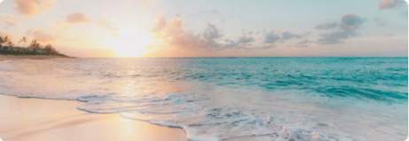
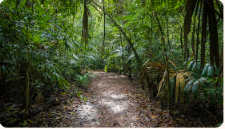
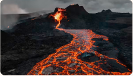

Yellow Leaf Bay
White sandy beaches encircling one of the most beautiful bays in the Pacific.
Learn more →Pacific Island · Taniti
Beaches, rainforest, an active volcano, and genuine island hospitality — all within 500 square miles of Pacific paradise.
About the Island
Taniti is a small tropical island covering less than 500 square miles, home to an indigenous population of roughly 20,000. The island's terrain ranges from sandy and rocky beaches to lush rainforest and a mountainous interior with an active volcano.
Historically sustained by fishing and agriculture, Taniti has opened its doors to tourism — and its residents are proud to share their home with the world.



Top Highlights
White sandy beaches encircling one of the most beautiful bays in the Pacific.
Learn more →Hike through dense tropical rainforest, zip-line through the canopy, or take a guided tour.
Learn more →Taniti's small, safe active volcano is one of the most unique attractions in the region.
Learn more →US Dollar
Euros & Yen accepted
120 volts
Same as United States
1 hospital
Several clinics
Tanitian & English
Younger residents bilingual
Before You Go
Public buses run 5 a.m.–11 p.m. Taxis, rental cars, and bikes are also available.
Full transport guide →Key things to know before you arrive — currency, safety, holidays, power, and medical facilities.
View all travel tips →This button represents an external provider booking link in the interactive prototype.